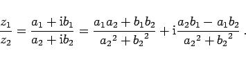
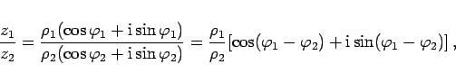
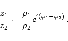
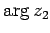
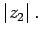

Die Division zweier komplexer Zahlen wird als die zur Multiplikation inverse Operation definiert. In algebraischer Schreibweise ergibt sich
|  | (1.140a) |
Die trigonometrische Schreibweise lautet
|  | (1.140b) |
d.h., der Betrag des Quotienten ist gleich dem Quotienten aus den Beträgen des Dividenden und des Divisors, während das Argument des Quotienten gleich der Differenz der beiden Argumente ist.
In der Exponentialform erhält man
|  | (1.140c) |
In der geometrischen Definition ergibt sich der Vektor, der den Quotienten z1/z2 darstellt, durch Drehung des die Zahl z1 darstellenden Vektors um den Winkel  im Uhrzeigersinn sowie durch Kontraktion dieses Vektors mit dem Faktor 
Hinweis: Eine Division durch Null ist nicht möglich.